import warnings
from pathlib import Path
import numpy as np
import pandas as pd
import matplotlib.pyplot as plt
import seaborn as sns
from IPython.display import Image, display
from sklearn.model_selection import train_test_split, cross_val_score, GridSearchCV, StratifiedKFold
from sklearn.preprocessing import StandardScaler, MinMaxScaler
from sklearn.pipeline import make_pipeline
from sklearn.linear_model import LinearRegression, LogisticRegression
from sklearn.naive_bayes import GaussianNB, MultinomialNB
from sklearn.tree import DecisionTreeClassifier
from sklearn.ensemble import AdaBoostClassifier
from sklearn.metrics import (mean_squared_error, mean_absolute_error, r2_score,
accuracy_score, confusion_matrix, ConfusionMatrixDisplay)
warnings.filterwarnings("ignore")
sns.set_theme(style="whitegrid")
ROOT = Path("..") if Path.cwd().name == "notebooks" else Path(".")
IMG, SAMPLES = ROOT / "images", ROOT / "data" / "samples"
IMG.mkdir(exist_ok=True)
def table_image(df, path, n=6, decimals=2):
show = df.head(n).round(decimals).astype(str)
fig, ax = plt.subplots(figsize=(max(8, 1.3 * show.shape[1]), 0.5 * (n + 1.5)))
ax.axis("off")
t = ax.table(cellText=show.values, colLabels=show.columns, loc="center", cellLoc="center")
t.auto_set_font_size(False); t.set_fontsize(9); t.scale(1, 1.5)
t.auto_set_column_width(list(range(show.shape[1])))
for (r, c), cell in t.get_celld().items():
cell.set_edgecolor("#cccccc")
if r == 0:
cell.set_facecolor("#1f3a5f"); cell.set_text_props(color="white", weight="bold")
fig.savefig(path, dpi=200, bbox_inches="tight"); plt.close(fig)
display(Image(str(path)))sample = pd.read_csv(SAMPLES / "supervised_sample_labeled.csv")
sample = pd.concat([sample, pd.get_dummies(sample.position, prefix="pos", dtype=int)], axis=1)
sample["is_high"] = (sample.value_tier == "High").astype(int)
train, test = train_test_split(sample, test_size=0.2, stratify=sample.value_tier, random_state=42)
assert set(train.index).isdisjoint(test.index)
part3_train = pd.read_csv(SAMPLES / "dt_train.csv")
print("train:", len(train), " test:", len(test), " overlap:", len(set(train.index) & set(test.index)))
print("same split as Part 3:", (train.name.values == part3_train.name.values).all())
print("share of High players train:", round(train.is_high.mean(), 3), " test:", round(test.is_high.mean(), 3))train: 4000 test: 1000 overlap: 0
same split as Part 3: True
share of High players train: 0.333 test: 0.334REG_X = ["age", "height", "minutes_log", "goals_per90", "assists_per90", "yellow_per90", "caps_log",
"pos_Defender", "pos_Midfield", "pos_Attack"]
ADA_X = ["age", "height", "minutes", "goals_per90", "assists_per90", "yellow_per90", "caps",
"pos_Goalkeeper", "pos_Defender", "pos_Midfield", "pos_Attack"]
reg_cols = ["name"] + REG_X + ["value_log", "is_high"]
ada_cols = ["name"] + ADA_X + ["value_tier"]
train[reg_cols].to_csv(SAMPLES / "reg_train.csv", index=False)
test[reg_cols].to_csv(SAMPLES / "reg_test.csv", index=False)
train[ada_cols].to_csv(SAMPLES / "ada_train.csv", index=False)
test[ada_cols].to_csv(SAMPLES / "ada_test.csv", index=False)
table_image(sample[reg_cols], IMG / "reg_sample.png", n=8)
table_image(train[reg_cols], IMG / "reg_train.png")
table_image(test[reg_cols], IMG / "reg_test.png")
table_image(sample[ada_cols], IMG / "ada_sample.png", n=8)
table_image(train[ada_cols], IMG / "ada_train.png")
table_image(test[ada_cols], IMG / "ada_test.png")
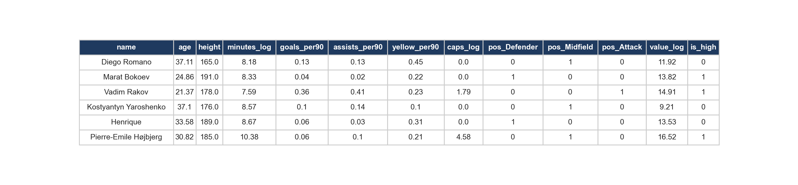
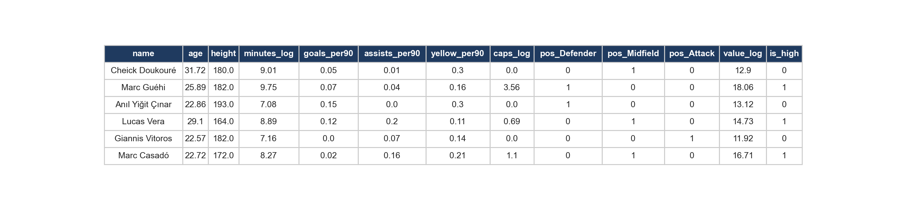
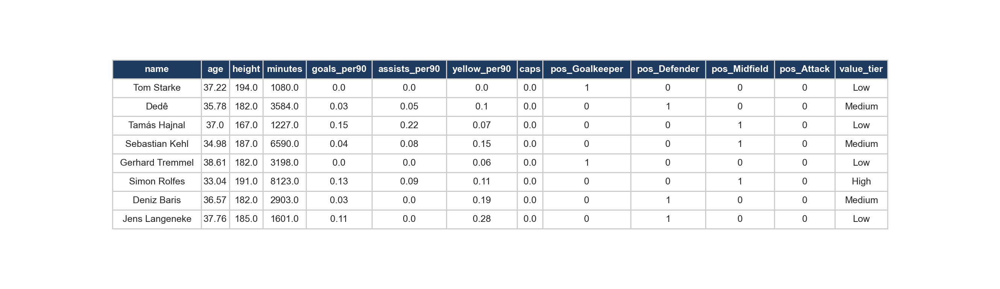


rng = np.random.default_rng(4)
x = rng.uniform(0, 10, 25)
y = 2 + 1.2 * x + rng.normal(0, 1.8, 25)
b, a = np.polyfit(x, y, 1)
fig, ax = plt.subplots(figsize=(6.5, 4.2))
ax.scatter(x, y, color="#1f3a5f", zorder=3)
xs = np.array([0, 10])
ax.plot(xs, a + b * xs, color="#d1495b", lw=2.5, label="best-fit line")
ax.vlines(x, y, a + b * x, color="gray", lw=1, label="errors (residuals)")
ax.set_xlabel("Feature")
ax.set_ylabel("Number to predict")
ax.set_title("Linear regression: the line that makes the errors smallest")
ax.legend()
plt.tight_layout()
fig.savefig(IMG / "reg_ov_01_linear.png", dpi=200, bbox_inches="tight")
plt.show()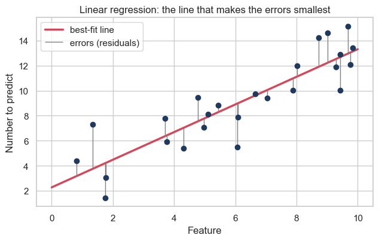
z = np.linspace(-6, 6, 300)
p = 1 / (1 + np.exp(-z))
fig, ax = plt.subplots(figsize=(6.5, 4.2))
ax.plot(z, p, color="#1f3a5f", lw=2.8)
ax.axhline(0.5, color="gray", ls="--")
ax.axvline(0, color="gray", ls="--")
ax.fill_between(z, 0, 1, where=z > 0, color="#d1495b", alpha=0.08)
ax.text(2.2, 0.15, "probability above 0.5\n-> class 'High'", ha="center")
ax.text(-2.8, 0.85, "probability below 0.5\n-> class 'Not High'", ha="center")
ax.set_xlabel("Linear score (b0 + b1*x1 + b2*x2 + ...)")
ax.set_ylabel("Probability of High")
ax.set_title("Logistic regression: the sigmoid turns a score into a probability")
plt.tight_layout()
fig.savefig(IMG / "reg_ov_02_sigmoid.png", dpi=200, bbox_inches="tight")
plt.show()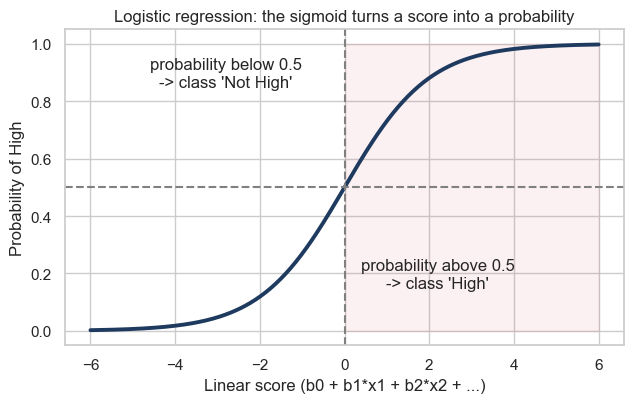
Xtr, Xte = train[REG_X], test[REG_X]
ytr, yte = train.value_log, test.value_log
lin = LinearRegression().fit(Xtr, ytr)
pred = lin.predict(Xte)
cv_r2 = cross_val_score(LinearRegression(), Xtr, ytr, cv=5, scoring="r2")
rmse = mean_squared_error(yte, pred) ** 0.5
mae = mean_absolute_error(yte, pred)
r2 = r2_score(yte, pred)
print("5-fold CV R2 on training data:", cv_r2.round(3), " mean:", cv_r2.mean().round(3))
print(f"TEST RMSE: {rmse:.3f} MAE: {mae:.3f} R2: {r2:.3f}")
print(f"typical miss is a factor of about {np.exp(mae):.2f}x in euros (from MAE)")5-fold CV R2 on training data: [0.619 0.612 0.606 0.591 0.589] mean: 0.603
TEST RMSE: 1.063 MAE: 0.862 R2: 0.581
typical miss is a factor of about 2.37x in euros (from MAE)fig, ax = plt.subplots(figsize=(5.8, 5.4))
ax.scatter(yte, pred, s=10, alpha=0.4, color="#1f3a5f")
lims = [min(yte.min(), pred.min()), max(yte.max(), pred.max())]
ax.plot(lims, lims, color="#d1495b", lw=2, label="perfect prediction")
ax.set_xlabel("Actual value (log euros)")
ax.set_ylabel("Predicted value (log euros)")
ax.set_title(f"Linear regression, testing set (R2 = {r2:.2f})")
ax.legend()
plt.tight_layout()
fig.savefig(IMG / "reg_01_pred_vs_actual.png", dpi=200, bbox_inches="tight")
plt.show()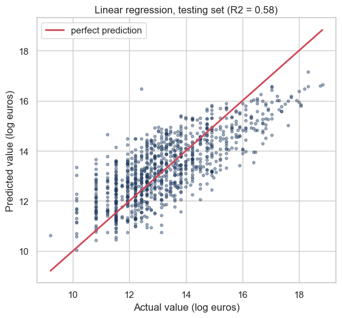
coef = pd.DataFrame({"feature": REG_X, "coefficient": lin.coef_})
coef["effect_on_value_pct"] = (np.exp(coef.coefficient) - 1) * 100
print("intercept:", round(lin.intercept_, 3))
print(coef.round(3).to_string(index=False))intercept: 13.07
feature coefficient effect_on_value_pct
age -0.217 -19.538
height 0.010 0.993
minutes_log 0.568 76.501
goals_per90 1.538 365.343
assists_per90 1.515 355.146
yellow_per90 -0.048 -4.718
caps_log 0.338 40.201
pos_Defender -0.341 -28.864
pos_Midfield -0.367 -30.698
pos_Attack -0.638 -47.150pipe = make_pipeline(StandardScaler(), LogisticRegression(max_iter=1000))
grid = GridSearchCV(pipe, {"logisticregression__C": [0.001, 0.01, 0.1, 1, 10, 100]}, cv=5, scoring="accuracy")
grid.fit(train[REG_X], train.is_high)
cv = pd.DataFrame({"C": [0.001, 0.01, 0.1, 1, 10, 100], "cv_accuracy": grid.cv_results_["mean_test_score"]})
print(cv.round(4).to_string(index=False))
print("chosen C:", grid.best_params_["logisticregression__C"])
table_image(cv, IMG / "reg_cv_table.png", n=6, decimals=4) C cv_accuracy
0.001 0.7895
0.010 0.8352
0.100 0.8415
1.000 0.8418
10.000 0.8427
100.000 0.8430
chosen C: 100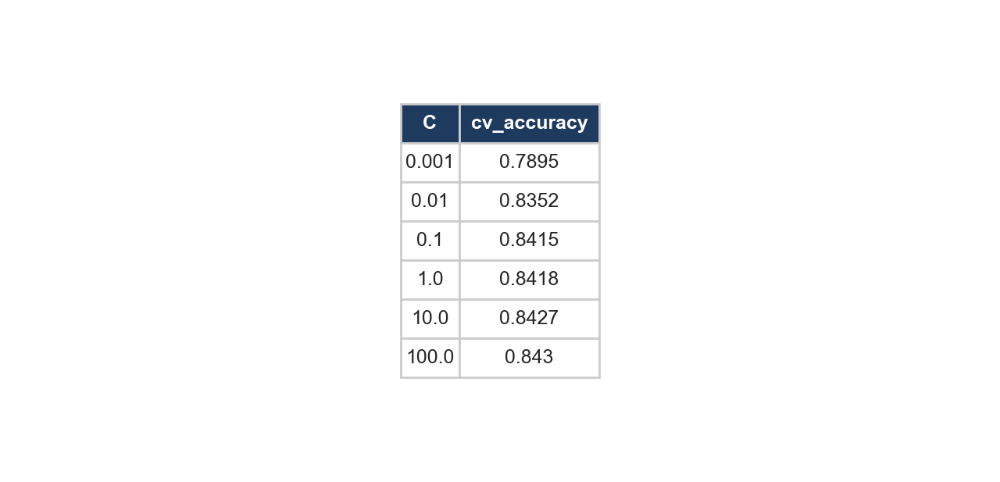
logit = grid.best_estimator_
lpred = logit.predict(test[REG_X])
logit_acc = accuracy_score(test.is_high, lpred)
base = 1 - test.is_high.mean()
fig, ax = plt.subplots(figsize=(4.6, 4.2))
ConfusionMatrixDisplay.from_predictions(test.is_high, lpred, display_labels=["Not High", "High"], ax=ax,
cmap="Blues", colorbar=False)
ax.set_title(f"Logistic regression (accuracy {logit_acc:.1%})")
ax.grid(False)
plt.tight_layout()
fig.savefig(IMG / "reg_02_logit_confusion.png", dpi=200, bbox_inches="tight")
plt.show()
print(confusion_matrix(test.is_high, lpred))
print(f"accuracy {logit_acc:.3f} always guessing 'Not High': {base:.3f}")
odds = pd.DataFrame({"feature": REG_X, "odds_ratio_per_1_SD": np.exp(logit[-1].coef_[0])})
print(odds.round(3).sort_values("odds_ratio_per_1_SD", ascending=False).to_string(index=False))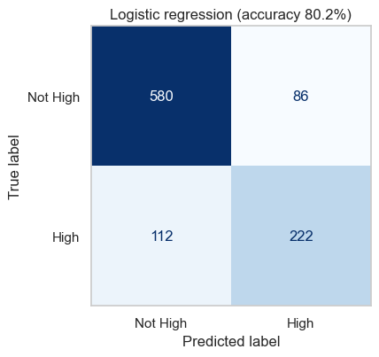
[[580 86]
[112 222]]
accuracy 0.802 always guessing 'Not High': 0.666
feature odds_ratio_per_1_SD
minutes_log 3.753
caps_log 1.979
goals_per90 1.503
assists_per90 1.423
height 1.169
yellow_per90 1.055
pos_Defender 0.684
pos_Midfield 0.667
pos_Attack 0.559
age 0.131gnb = GaussianNB().fit(train[REG_X], train.is_high)
mm = MinMaxScaler().fit(train[REG_X])
mnb = MultinomialNB().fit(mm.transform(train[REG_X]), train.is_high)
cmp = pd.DataFrame({
"model": ["Logistic regression", "Gaussian NB", "Multinomial NB", "Always 'Not High'"],
"test_accuracy": [logit_acc,
accuracy_score(test.is_high, gnb.predict(test[REG_X])),
accuracy_score(test.is_high, mnb.predict(np.clip(mm.transform(test[REG_X]), 0, 1))),
base]})
print(cmp.round(3).to_string(index=False))
fig, ax = plt.subplots(figsize=(6.5, 3.6))
sns.barplot(data=cmp, y="model", x="test_accuracy", color="#1f3a5f", ax=ax)
ax.set_xlim(0.5, 1); ax.set_xlabel("Testing accuracy"); ax.set_ylabel("")
for i, v in enumerate(cmp.test_accuracy):
ax.text(v + 0.005, i, f"{v:.1%}", va="center")
plt.tight_layout()
fig.savefig(IMG / "reg_03_vs_naive_bayes.png", dpi=200, bbox_inches="tight")
plt.show() model test_accuracy
Logistic regression 0.802
Gaussian NB 0.769
Multinomial NB 0.711
Always 'Not High' 0.666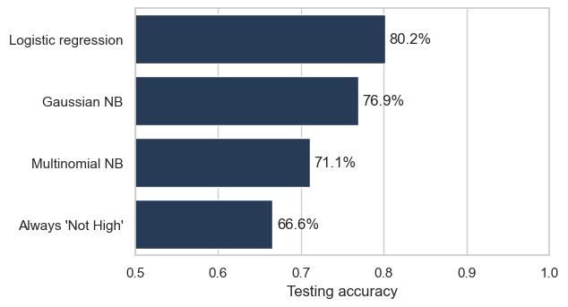
rng = np.random.default_rng(3)
X = rng.uniform(0, 10, (14, 2))
y = np.where(X[:, 0] + X[:, 1] + rng.normal(0, 2, 14) > 10, 1, -1)
w = np.ones(14) / 14
fig, axes = plt.subplots(1, 3, figsize=(14, 4.4))
for r, ax in enumerate(axes):
best = None
for f in (0, 1):
for t in np.linspace(0.5, 9.5, 19):
for s in (1, -1):
pr = np.where(X[:, f] > t, s, -s)
err = w[pr != y].sum()
if best is None or err < best[0]:
best = (err, f, t, s)
err, f, t, s = best
pr = np.where(X[:, f] > t, s, -s)
alpha = np.log((1 - err) / err)
wrong = pr != y
ax.scatter(X[:, 0], X[:, 1], s=w * 4000, c=np.where(y == 1, "#d1495b", "#1f3a5f"), edgecolor="k", zorder=3)
ax.scatter(X[wrong, 0], X[wrong, 1], s=w[wrong] * 4000 + 140, facecolor="none", edgecolor="orange", lw=2, zorder=4)
(ax.axvline if f == 0 else ax.axhline)(t, color="gray", ls="--")
ax.set_title(f"Round {r + 1}: weighted error {err:.2f}, alpha {alpha:.2f}")
ax.set_xticks([]); ax.set_yticks([])
w = w * np.exp(alpha * wrong)
w = w / w.sum()
fig.suptitle("Dot size = weight. Orange rings = mistakes, which get bigger in the next round")
plt.tight_layout()
fig.savefig(IMG / "ada_ov_01_reweighting.png", dpi=200, bbox_inches="tight")
plt.show()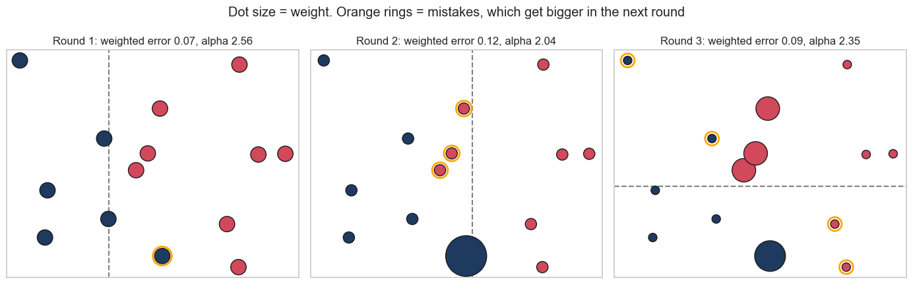
e = np.linspace(0.02, 0.5, 200)
alpha = np.log((1 - e) / e)
fig, axes = plt.subplots(1, 2, figsize=(11.5, 4.2))
axes[0].plot(e, alpha, color="#1f3a5f", lw=2.8)
axes[0].set_xlabel("Weighted error of the stump")
axes[0].set_ylabel("Alpha (the stump's say in the vote)")
axes[0].set_title("Accurate stumps get a bigger alpha")
alphas = [1.5, 0.7, 0.5]
votes = ["Low", "Medium", "Medium"]
colors = {"Low": "#8da0cb", "Medium": "#fc8d62"}
axes[1].bar([f"Stump {i + 1}\nvotes {v}" for i, v in enumerate(votes)], alphas, color=[colors[v] for v in votes])
tot = {k: sum(a for a, v in zip(alphas, votes) if v == k) for k in colors}
axes[1].set_ylabel("Alpha")
axes[1].set_title(f"Weighted vote: Low = {tot['Low']:.1f}, Medium = {tot['Medium']:.1f} -> Low wins")
plt.tight_layout()
fig.savefig(IMG / "ada_ov_02_alpha_vote.png", dpi=200, bbox_inches="tight")
plt.show()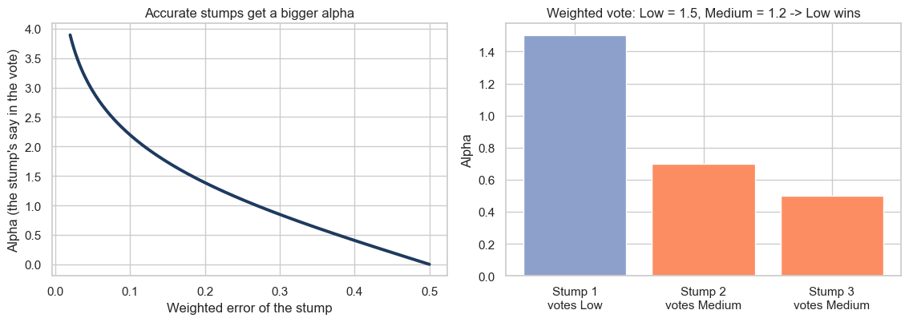
Xa, ya = train[ADA_X], train.value_tier
Xa_te, ya_te = test[ADA_X], test.value_tier
stump = DecisionTreeClassifier(max_depth=1)
LRS, MAX_N = [0.1, 0.5, 1.0], 300
skf = StratifiedKFold(5, shuffle=True, random_state=42)
curves = {}
for lr in LRS:
scores = []
for tr_i, va_i in skf.split(Xa, ya):
m = AdaBoostClassifier(estimator=stump, n_estimators=MAX_N, learning_rate=lr, random_state=42)
m.fit(Xa.iloc[tr_i], ya.iloc[tr_i])
scores.append(list(m.staged_score(Xa.iloc[va_i], ya.iloc[va_i])))
curves[lr] = np.mean(scores, axis=0)
best_lr = max(curves, key=lambda k: curves[k].max())
best_n = int(curves[best_lr].argmax()) + 1
print(f"best learning rate: {best_lr} best number of rounds: {best_n} CV accuracy: {curves[best_lr].max():.3f}")
for lr in LRS:
print(f"lr {lr}: best CV accuracy {curves[lr].max():.3f} at {int(curves[lr].argmax()) + 1} rounds")
fig, ax = plt.subplots(figsize=(7.5, 4.4))
for lr, c in zip(LRS, ["#8da0cb", "#1f3a5f", "#d1495b"]):
ax.plot(range(1, MAX_N + 1), curves[lr], color=c, label=f"learning rate {lr}")
ax.scatter([best_n], [curves[best_lr].max()], color="k", zorder=5, label="chosen setting")
ax.set_xlabel("Number of rounds (stumps)")
ax.set_ylabel("Validation accuracy (5-fold average)")
ax.set_title("Validation accuracy as rounds are added")
ax.legend()
plt.tight_layout()
fig.savefig(IMG / "ada_01_validation_curve.png", dpi=200, bbox_inches="tight")
plt.show()best learning rate: 1.0 best number of rounds: 299 CV accuracy: 0.645
lr 0.1: best CV accuracy 0.632 at 300 rounds
lr 0.5: best CV accuracy 0.642 at 192 rounds
lr 1.0: best CV accuracy 0.645 at 299 rounds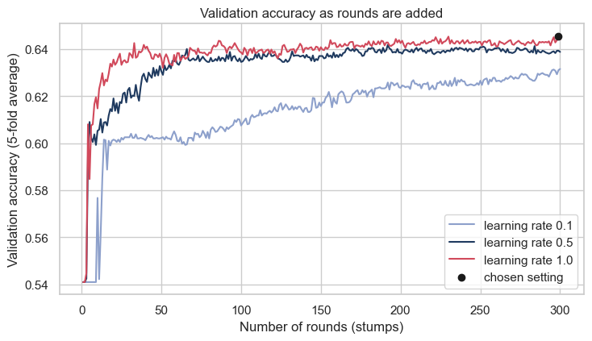
ada = AdaBoostClassifier(estimator=stump, n_estimators=best_n, learning_rate=best_lr, random_state=42).fit(Xa, ya)
apred = ada.predict(Xa_te)
ada_acc = accuracy_score(ya_te, apred)
TIERS = ["Low", "Medium", "High"]
fig, ax = plt.subplots(figsize=(4.8, 4.4))
ConfusionMatrixDisplay.from_predictions(ya_te, apred, labels=TIERS, ax=ax, cmap="Blues", colorbar=False)
ax.set_title(f"AdaBoost (accuracy {ada_acc:.1%})")
ax.grid(False)
plt.tight_layout()
fig.savefig(IMG / "ada_02_confusion.png", dpi=200, bbox_inches="tight")
plt.show()
print(confusion_matrix(ya_te, apred, labels=TIERS))
print(f"AdaBoost test accuracy: {ada_acc:.3f}")
imp = pd.Series(ada.feature_importances_, index=ADA_X).sort_values()
fig, ax = plt.subplots(figsize=(6.5, 4))
imp[imp > 0].plot.barh(ax=ax, color="#1f3a5f")
ax.set_title("Which features the stumps used most")
plt.tight_layout()
fig.savefig(IMG / "ada_03_importances.png", dpi=200, bbox_inches="tight")
plt.show()
print(imp.sort_values(ascending=False).head(4).round(3))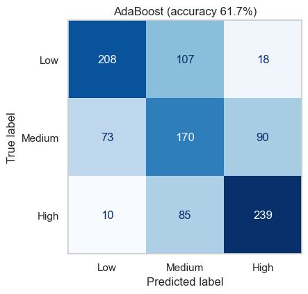
[[208 107 18]
[ 73 170 90]
[ 10 85 239]]
AdaBoost test accuracy: 0.617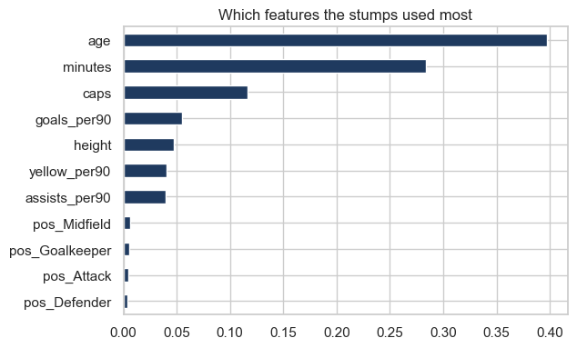
age 0.397
minutes 0.284
caps 0.116
goals_per90 0.055
dtype: float64tree = DecisionTreeClassifier(criterion="entropy", max_depth=4, random_state=42)
tree.fit(train[ADA_X], ya)
tree_acc = accuracy_score(ya_te, tree.predict(Xa_te))
one_stump = DecisionTreeClassifier(max_depth=1, random_state=42).fit(Xa, ya)
stump_acc = accuracy_score(ya_te, one_stump.predict(Xa_te))
cmp2 = pd.DataFrame({"model": ["One stump", "Decision tree (Tree 2)", "AdaBoost"],
"test_accuracy": [stump_acc, tree_acc, ada_acc]})
print(cmp2.round(3).to_string(index=False))
print(f"AdaBoost minus decision tree: {100 * (ada_acc - tree_acc):+.1f} points")
fig, ax = plt.subplots(figsize=(6.5, 3.4))
sns.barplot(data=cmp2, y="model", x="test_accuracy", color="#1f3a5f", ax=ax)
ax.set_xlim(0.3, 0.8); ax.set_xlabel("Testing accuracy"); ax.set_ylabel("")
for i, v in enumerate(cmp2.test_accuracy):
ax.text(v + 0.005, i, f"{v:.1%}", va="center")
plt.tight_layout()
fig.savefig(IMG / "ada_04_vs_tree.png", dpi=200, bbox_inches="tight")
plt.show() model test_accuracy
One stump 0.529
Decision tree (Tree 2) 0.605
AdaBoost 0.617
AdaBoost minus decision tree: +1.2 points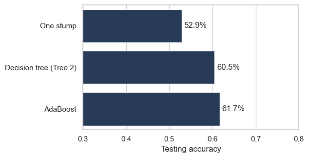
needed = ["reg_sample", "reg_train", "reg_test", "reg_cv_table", "reg_ov_01_linear", "reg_ov_02_sigmoid",
"reg_01_pred_vs_actual", "reg_02_logit_confusion", "reg_03_vs_naive_bayes",
"ada_sample", "ada_train", "ada_test", "ada_ov_01_reweighting", "ada_ov_02_alpha_vote",
"ada_01_validation_curve", "ada_02_confusion", "ada_03_importances", "ada_04_vs_tree"]
for n in needed:
print("ok " if (IMG / f"{n}.png").exists() else "MISSING", f"images/{n}.png")
for n in ["reg_train", "reg_test", "ada_train", "ada_test"]:
print("ok " if (SAMPLES / f"{n}.csv").exists() else "MISSING", f"data/samples/{n}.csv")ok images/reg_sample.png
ok images/reg_train.png
ok images/reg_test.png
ok images/reg_cv_table.png
ok images/reg_ov_01_linear.png
ok images/reg_ov_02_sigmoid.png
ok images/reg_01_pred_vs_actual.png
ok images/reg_02_logit_confusion.png
ok images/reg_03_vs_naive_bayes.png
ok images/ada_sample.png
ok images/ada_train.png
ok images/ada_test.png
ok images/ada_ov_01_reweighting.png
ok images/ada_ov_02_alpha_vote.png
ok images/ada_01_validation_curve.png
ok images/ada_02_confusion.png
ok images/ada_03_importances.png
ok images/ada_04_vs_tree.png
ok data/samples/reg_train.csv
ok data/samples/reg_test.csv
ok data/samples/ada_train.csv
ok data/samples/ada_test.csv